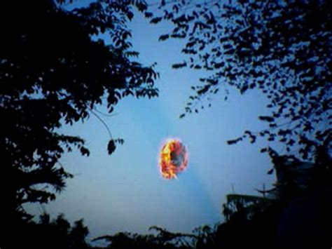

Banaspati is a term used to describe a demon or ghost with a high-level black magic power that has a form like fire and the element of fire. According to urban legends, a Banaspati looks like a form of fireball or sometimes like a vortex of fire. Such ghost or demons fly from one place to another in form of different shape and size. It is believed that such demons will burn people who disturb them. They usually appear in dark places like fields and forest and wonders in darkness. It is believed that the Banaspati feeds on the anger and emotions of its victims.
It is believed that they are of two types:
Banaspati Geni – which is believed that fear is its main strength. The greater the person fear, the more powerful and stronger it gets.
Banaspati clay – they hide in the forest and they prey on victims by sucking its blood until it runs out. The victims are those people whose bodies are not touching to the ground. So the safest way to avoid being a prey is to stand in the ground without wearing footwear.